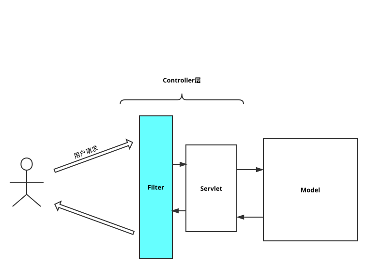

Filter可认为是Servlet的一种增强版,主要用于对用户请求进行预处理,也可以对HttpServletResponse进行后处理,是个典型的处理链. 也可对用户请求进行响应,但实际中很少这样用.

1 | public class LogFilter implements Filter{ |
在web.xml中配置Filter
类似Servlet配置
1 | <filter> |
Filter可认为是Servlet的一种增强版,主要用于对用户请求进行预处理,也可以对HttpServletResponse进行后处理,是个典型的处理链. 也可对用户请求进行响应,但实际中很少这样用.

1 | public class LogFilter implements Filter{ |
类似Servlet配置
1 | <filter> |